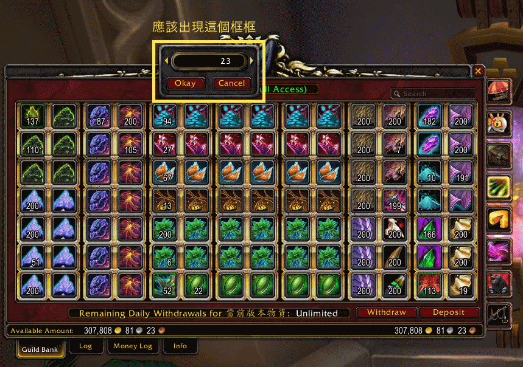

這裡列出的事項皆事出有因。如果跟你想做的事情牴觸，可以提出來討論，我們可以一起完善條則。
本公會希望為會員提供安全的公會環境。任何遭遇騷擾的會員，除了使用遊戲內建舉報系統，可以提供證據與會長，幫助我們改善公會環境。
會倉是所有公會成員支持公會活動，互助互利的成果。長年以來，我們發展了一些好用的小規則，希望所有會員遵守。
首先，不要挖洞！會倉取用時，最後一件請勿取走，這樣補貨比較方便，才知道要補什麼。
這是最重要的規則，因為公會會視實際需求調整會倉，避免會倉看起來滿滿的，卻沒什麼用。
取用物品時，可以用 Shift + 左鍵輸入確切數量，會出現下圖黃框標示的介面，就不會一次動到整疊物資。

最後，會倉就是要給大家用的，只要拿得到物品，就表示歡迎使用。別害羞！
以下是會倉各頁說明。
| 頁面 | 頁面名稱 | 使用說明 |
|---|---|---|
| 1 | 出團物資 | 首創者聖墓台服第一進度團的出團物資 |
| 2 | 還算有用的雜物 | 當前版本還算有用的雜物可以用滑鼠右鍵丟進來。請盡量確認是「有用的」。 |
| 3-4 | 當前版本物資 | 當前版本物資可以用滑鼠右鍵丟第三頁。食物和肉、魚可以用滑鼠右鍵丟第四頁。舊版本物資請放到第六頁。 |
| 5 | 舊版本物資 | 舊版本布、皮、草、礦、附魔材料、BOE、圖紙可以用滑鼠右鍵丟進來。 |
| 6 | 舊版本物資 | 想貢獻物資，但不知道放哪裡？有東西很希望其他人用掉？可以用這一頁。（拿到寵物要當好主人喔！） |
| 7 | 捐獻出團物資/抽獎用 | 這裡放的物資是公會出團活動會用到的珍貴材料。無論捐獻多少，都可以幫到做大鍋、大餐的人。 |
這些在遊戲中會倉「資訊」頁面都看得到。
此外，公會會適時衡量物價、需求等情況買賣物資，籌措活動需要的資金。
請點此回目錄。